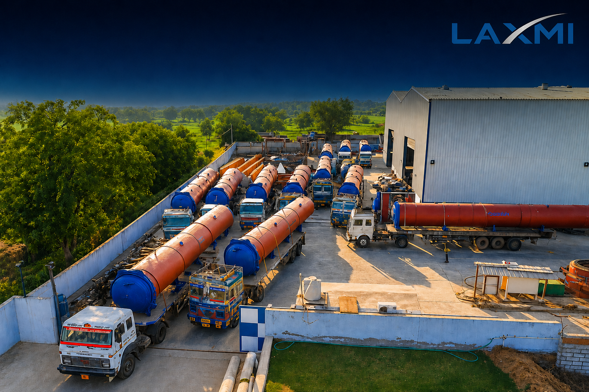

Load
Cut cakes are grouped on steam wagons for efficient vessel utilisation and orderly batch movement.

AAC PLANT MACHINERY · PRESSURE CURING
High-pressure steam curing depends on more than the vessel. Laxmi En-Fab evaluates capacity, cake movement, safety architecture, cycle control and steam integration as one production system.
Project parameters are defined against the approved process and engineering basis.
DIRECT ANSWER
An AAC autoclave is a horizontal pressure vessel that cures freshly cut AAC cakes with controlled high-pressure steam. The hydrothermal curing cycle contributes to strength development and dimensional stability.
The correct solution must connect usable vessel dimensions, cake and wagon arrangement, complete cycle time, safe door operation, steam distribution, condensate management, automation and the plant production schedule.
THE CURING JOURNEY
Each stage prepares the next. Production speed should never compromise the approved curing curve or the safe operating sequence.
Cut cakes are grouped on steam wagons for efficient vessel utilisation and orderly batch movement.
The door is seated and the positive mechanical locking condition is verified before steam admission.
Air removal or vacuum follows the approved process recipe before the main steam stage.
Steam enters through a controlled pressure profile suited to the cake, vessel and curing recipe.
Pressure and temperature remain stable for the defined hydrothermal curing period.
Pressure reduces in a controlled sequence; usable steam energy may be transferred or recovered.
The door-release sequence begins only after the verified safe-pressure condition is achieved.
SELECTION BEFORE SPECIFICATION
Saleable output, operating days and realistic plant utilisation establish the commercial requirement.
Mould, cake, plate and wagon dimensions determine material loaded in each curing batch.
Loading, rise, hold, recovery, pressure reduction and unloading must all enter the capacity calculation.
Door arrangement, tracks, foundations and header capacity should account for planned expansion.
CONFIGURATION CHOICES
Plant layout, loading movement, rail arrangement, cycle planning and expansion.
Door movement and pressure locking are separate functions; both require review.
Define valves, permissives, alarms, sequences, trends and records—not only the label.
Scheduling, pressure conditions, condensate, contamination and suitable heat demand.
PRESSURE SAFETY
A quick-opening autoclave door requires disciplined design, manufacture, installation, interlocking, verification and maintenance. Electronic automation should supplement—not replace—a positive mechanical locking arrangement.
Confirm the door is correctly seated and the mechanical lock is positively engaged.
Steam admission becomes available only after the defined lock condition is confirmed.
Monitor the cycle with correctly selected instruments, safety valves and approved logic.
Isolate steam, reduce pressure and independently verify the safe condition before door release.
MANUFACTURING EVIDENCE
A serious pressure-vessel purchase requires a project-specific design basis and an agreed quality dossier. “Made to international standards” is not an adequate specification.
01Approved drawings and design documentation
02Material certificates and traceability
03Welding procedures and qualifications
04Dimensional and door-integration checks
05Agreed NDT reports and acceptance criteria
06Hydrotest and witnessing records
07Instrument and safety-valve certificates
08Operating and preventive-maintenance manuals
SYSTEM INTEGRATION
Depending on scope, automation can coordinate door permissives, valve sequencing, pressure rise, holding, transfer, alarms, recipes and SCADA records.
Automation supports repeatability. It does not remove the need for trained operators, instrument calibration and preventive maintenance.
Available steam energy may be transferred to another vessel or a suitable thermal user where scheduling and system design permit.
Savings depend on pressure relationships, the curing curve, condensate, contamination and simultaneous heat demand. Publish savings only when measured.
LIFECYCLE RESPONSIBILITY
Installation must coordinate foundations, rails, thermal movement, piping, condensate drainage, access, controls and material-handling equipment.
Operation requires defined inspection of the door, lock, sealing surfaces, instruments, safety valves, supports, insulation and corrosion-prone areas.
Discuss installation and lifecycle scope ↗BUYER QUESTIONS
An AAC autoclave is a horizontal pressure vessel that cures cut AAC cakes using controlled high-pressure steam. Its cycle normally includes loading, air removal or vacuum, pressure rise, holding, controlled pressure reduction and unloading.
Quantity depends on cake volume per batch, complete cycle duration, realistic cycles per day, operating hours, planned utilisation and target production. The calculation must also reconcile mould, cutting, wagon, boiler and material-handling capacity.
Operating pressure is defined by the approved product recipe and process design. It must not be confused with vessel design pressure, safety-valve set pressure or hydrotest pressure. Project-specific values belong in the approved technical specification.
The complete cycle includes loading, air removal, pressure rise, holding, controlled pressure reduction and unloading. Actual duration varies with formulation, cake dimensions, loading, steam availability, pressure profile and recovery arrangement.
Depending on scope, it may include door permissives, valve sequencing, pressure-rise control, holding, steam transfer, alarms, recipes, trends and SCADA records. Every automatic and manual function should be defined in the proposal.
Yes, where the production schedule and steam-system design provide a suitable receiving vessel or heat user. The solution must protect the approved curing curve and account for pressure variation, condensate, contamination and simultaneous thermal demand.
PROJECT-SPECIFIC ENGINEERING
Share your target capacity, mould or cake size, operating schedule and project location. Receive a focused discussion covering configuration, quantity, automation, steam integration and supply boundaries.